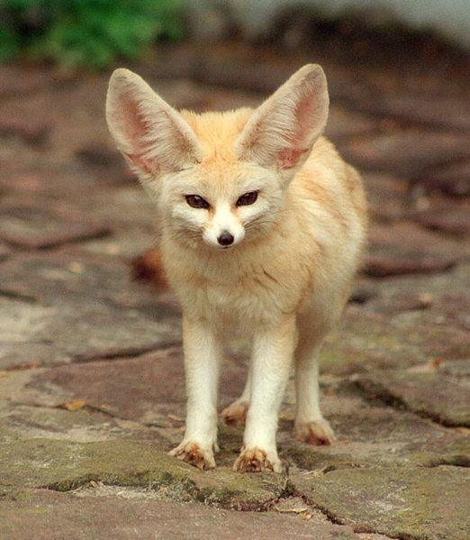
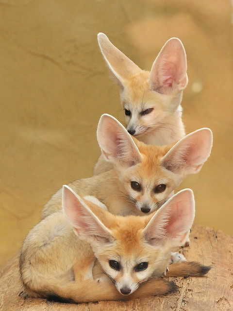

Sivatagiróka
Bence
A sivatagi róka a Szahara ismert nagyfülű, kistestű kutyaféléje, de a Sínai- és az Arab-félsziget sivatagaiban is megtalálható. Többnyire azokat a homok dűnék között fekvő területeket kedveli, ahol a nagy hőség ellenére is valamilyen gyér, száraz növényzet található.
A sivatagi róka (Vulpes Zerda), mint faj a Kutyafélék (Canidae) családjába, azon belül is a Rókák (Vulpini) nemzetségébe tartozik. A Zerda szó a görög xeros jelzőből eredeztethető, melynek jelentése száraz - utalva az állat élőhelyére. Angol nyelvterületen a faj Fennec Fox néven ismert, a megnevezés első tagja a róka szó arab változatából származik.
Érdekességképpen megemlíthető, hogy régebben a rendszertan egy külön genuszt (Fennecus) definiált a sivatagi róka besorolására, amely így régiesen Fennecus Zerda nevet viselte. Ennek oka az, hogy a faj több, más rókaféléktől eltérő tulajdonsággal is rendelkezik: Anatómiailag az egyik legszembetűnőbb különbség az ibolyamirigy hiánya. Továbbá a többi róka faj 35-39 kromoszómájával szemben, a sivatagi róka mindösszesen 32 kromoszómával rendelkezik. Emellett falkákban élnek - ami rókák esetében igen szokatlan.
A sivatagi róka a Szahara ismert nagyfülű, kistestű kutyaféléje, de a Sínai- és az Arab-félsziget sivatagaiban is megtalálható. Többnyire azokat a homok dűnék között fekvő területeket kedveli, ahol a nagy hőség ellenére is valamilyen gyér, száraz növényzet található.
Köszönhetően a rókákra jellemző nagyfokú alkalmazkodó képességnek és szaporaságnak, a sivatagi róka is azon fajok közé tartozik, melyeket a közeljövőben biztosan nem kell féltenünk a kihalástól.
Egy kifejlett egyed testhossza 24-40 cm, amihez átlagosan 20 cm hosszúságú farok tartozik. A szembetűnően nagy fülek körülbelül 10-15 cm hosszúságúak, ebből fakadóan a róka teljes testfelületének jelentős hányadát teszik ki. Szerepük kettős: Egyrész a vékony bőrrel borított és sűrű erezettel ellátott fülek hőcserélőként segítenek az állat testhőmérsékletének szabályozásában, emellett az igen érzékeny hallószerv fontos szerepet játszik - a főként éjszaka vadászó róka számára - a zsákmány helyzetének pontos felmérésében. (Újabb elméletek szerint ez utóbbi volt az evolúciós fejlődés szempontjából a fontosabb.)
A felnőtt példányok súlya átlagosan 0,8-1,6 kg, míg az újszülött kölykök alig nyomnak 50 grammnál többet. A sivatagi róka testét sárgás-homokszínű szőrzet borítja, hasoldalát, pofáját és fülének belső oldalát azonban fehéresszürke szőrszálak fedik. A farka vége jellegzetesen fekete. Ez a színezet jó rejtőzködést tesz lehetővé a róka számára a sivatagi környezetben. Pofáján - elsősorban az orr és a szemöldök tájékon - hosszú fekete tapogatószőrök (bajusz) figyelhetőek meg, melyek a sötétben való tájékozódást segítik.
A tömött bunda kitűnő hőszigetelő képességgel rendelkezik, így megvédi az éjszaka vadászó rókát a sivatagban uralkodó éjjeli hidegtől. Ugyanakkor a világos színezet hatékonyan veri vissza a hőt, így nappal véd a túlmelegedés ellen is. A mancsok érzékeny párnáit szintén szőr borítja, amely egyrészt tompítja a róka lépteinek zaját, másfelől véd a nappali homok perzselő forróságától. Összegezve kijelenthetjük, hogy a sivatagi róka mind a nappali forróság, mind az éjszakai fagy ellen kitűnő védelemmel rendelkezik.
Ahogy az már feljebb említésre került, a sivatagi róka főként éjjel vadászik. Tápláléka igen változatos, mivel a többi rókához hasonlóan mindenevő. Főként rágcsálókat, gerincteleneket (elsősorban rovarok), kisebb madarakat fogyaszt, de tojás reményében a sziklák között rejtőző madárfészekeket is szívesen felkeresi. Kis mennyiségben növényi táplálékot is fogyaszt.
Vadászati technikája nagyon hasonlít a vörös rókák esetében megfigyelthez: Előbb érzékeny fülei segítségével meghatározza a zsákmány helyét, ilyenkor gyakori, hogy fejét elforgatva több irányból is beméri a távolságot. Ezt követően egy magasívű ugrással ráveti magát a prédára. Az ugrás halálosan pontos, szinte soha sem véti el célját.
Ezen faj esetében is megfigyelték, hogy más rókákhoz hasonlóan az elejtett zsákmány egyrészét elraktározza. Ehhez különféle üregeket vagy maga által ásott gödröket használ, melyeket azután gondosan betemet. Az ilymódon létesített élelmiszer-depók helyére a homok dűnék egy hangúsága ellenére is kitűnően emlékezik.
A sivatagi élethez való nagyfokú alkalmazkodása következtében nincs szüksége közvetlen vízforrásra. A szükséges víz döntő hányadát az elfogyasztott táplálékból nyeri. Veséi nagy hatékonysággal nyerik ki az utolsó csepp nedvességet is a táplálékból, így a szervezet vízvesztesége igen alacsony. Ettől függetlenül, ha lehetősége van, akkor szívesen összeszedegeti a száraz növényzeten összegyűlt harmatot is.
A sivatagi róka kotorékait nyílt térségeken vagy homok dűnék oldalában olyan helyeken találjuk, ahol a homok kötött - így a szél nem tesz számottevő kárt az odúban. Egy kotorék 120 m2 alapterületű is lehet és akár 10-15 bejárattal is rendelkezhet. Ezeket, a sivatagi róka testalkatához viszonyítva meglepően nagy méreteket az teszi indokolttá, hogy a sivatagi rókák más rókákkal ellentétben "falkákban", szoros kolóniákban élnek. Egy kolóniát egy adott rókacsalád több generációja alkotja. A kölykök ugyanis ivaréretté válva többnyire nem hagyják el azonnal a szülők kotorékát, hanem sokáig a családdal maradnak, megvárva akár egy- két következő almot. Igen gyakori eset, hogy két nagyobb család egymás szoros közelében építi ki fészkét és osztozkodnak a territóriumon. Sőt az is előfordulhat, hogy a két kotorék között átjáró alagutakat létesítik.
Ha a homok kevéssé alkalmas - laza szerkezeténél fogva - kiterjedt járatok építésére, akkor a rókák kisebb, egy-két bejárattal rendelkező kotorékot építenek. Ilyen esetben egy kotorékot többnyire csak egy rókapár használ. A felcseperedő kölyök rókavárat építenek, de többnyire a közelben maradnak.
Ezen apró rókafaj szociális viselkedéséről meglehetősen keveset tudunk. Természetes környezetükben való megfigyelésük igen nehézkes, mivel nappal ritkán láthatóak, ezért a csekély ismeretanyag nagy része fogságban tartott egyedektől származnak - ebből fakadóan nem feltétlen egyezik meg a rókák természetes társas viselkedésével. Távolsági kommunikációjukban a különféle hívó kiáltások jellemzik, közvetlen érintkezés esetén a testbeszéd dominál. A szoros együttélésből fakadóan a felnőtt egyedek viselkedésében is kitüntetett szerepe van az egymással való játéknak, amely megerősíti a kolónia összetartozását és csökkenti a belső rivalizálás feszültségeit.
A megfigyelések szerint a rókák párválasztást többnyire permanens, életre szóló jellegű. Előfordul azonban, hogy a hím nem csupán egyetlen nőstény, hanem egy kisebb - néhány szukából álló - hárem kegyeit élvezi. A nőstények évente egyszer tüzelnek, melynek ideje január-február. Ez az időpont a sivatagi rókák esetében inkább csak iránymutatás érvényű, egy adott egyed esetében akár féléves eltolódás is lehetséges. A koslatás idején a hímek aggresszívabbá válnak és vizeletükkel sűrűn megjelölik területeiket, melyet más hímekkel szemben kitartóan védelmeznek. A párválasztást, majd a párzás tényleges aktusát követően - mely a kutyafélékre jellemző forgatókönyv szerint zajlik - a hím erősen védelmezi a szukát és élelemmel látja el a vemhesség ideje alatt.
A sivatagi rókák esetében vemhesség kb 50 nap hosszú. A kölykök születése jellemzően március és június közé esik, de a fentebb említett okból ez is nagy mértékben mobilis dátum. Egy átlagos alomban 1-4 köylköt találhatunk. Az újszülött rókák szemei szorosan zártak és fülük a testükhöz van tapadva. A szemek a tizedik naptól nyílnak ki, majd a fülek is lassan felemelkednek. Az első két hónapban a kölykök kizárólag anyatejjel táplálkoznak, a szilárd táplálékkal a 60-70. napot követően kezdenek ismerkedni. A rókák odaadó szülők, a kölyöknevelésből hím is kiveszi a részét. A kölykök ivarérettségüket kilenchónapos korukra érik el.
A köylöknevelési időszak igencsak kimeríti egy adott terület élelemforrásait, ezért amikor a kölykök már kelleőn nagyok illetve a vadászattal is kezdenek ismerkedni az egész róka-kolónia felkerekedik és elhagyja az addig használt kotorékot. A klán ilyenkor sorra felkeresi saját territoriumának más kotorékait, így kihasználva a különböző területek kedvező adottságait. A következői évi kölyöknevelés alkalmával előszeretettel térnek vissza az előző évben már bevált rókaváraba.
A sivatagi róka szabadon kb 8, fogságban akár 12 évig is élhet. Természetben a várható életkoruk kb kétszerese a vörös rókaénak, mivel igen kevés természetes ellenségük van (karakál, afrikai uhu), továbbá nincsenek a populációnak olyan jellegű biológia határoló tényezői, mint a vörös róka esetében a veszettség, rühesség.
Észak-Afrika országaiban hagyományosan a prémjéért vadásszák a sivatagi rókát. Rejtőzködő életmódja miatt a legelterjedtebb módszer a csapdázás. Egyes népcsoportok húsát is fogyasztják.
Sok országban tartható, mint egzotikus házi állat. Érdekes módon sok esetben a sivatagi róka tartásánál lazábbak a jogi korlátozások, mint a közönséges vörös róka esetében. Ha kölyökkorától ember közelben nevelkedik, akkor más rókákhoz hasonlóan bizonyos mértékig "megszelídül", azonban többnyire csak közvetlen gondozója iránt tanúsított kötődést.
Forrás: rokabaratklub